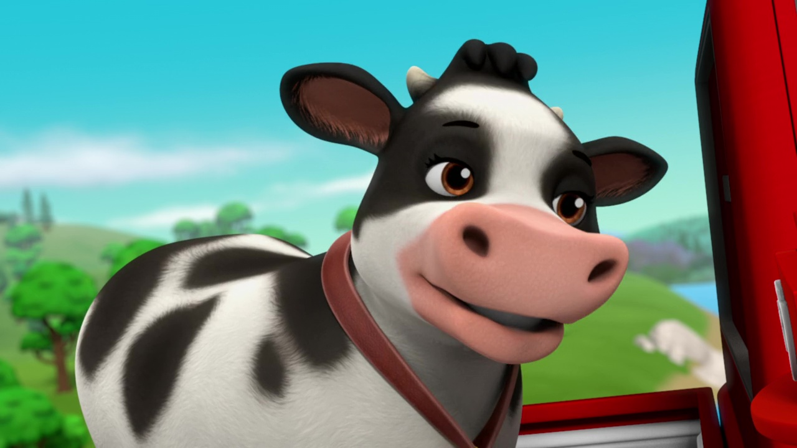
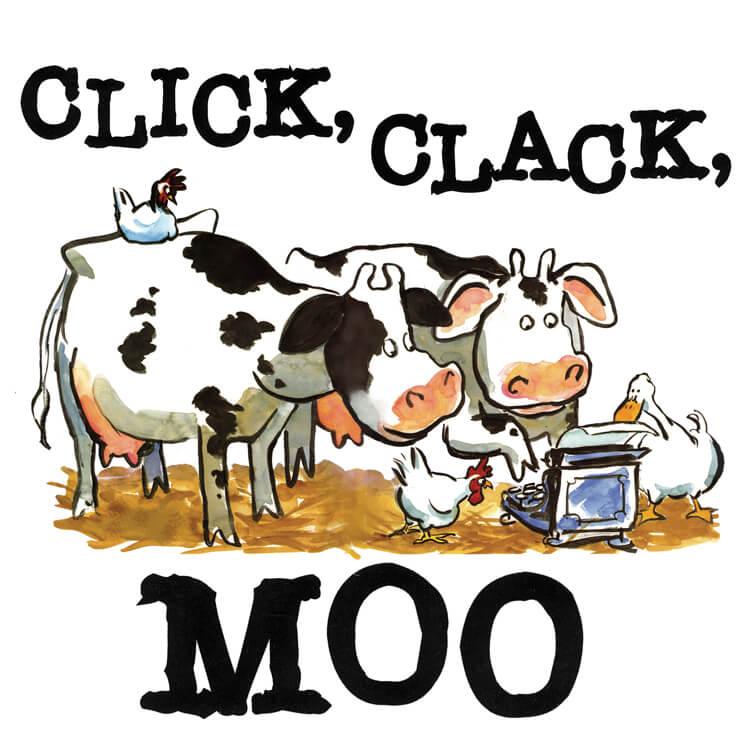

Spotted cows are cows with spots. They are identifiable by their bodies, which have spots. Unfortunately, this is not a real breed of cow. It is made up, but still the most popular type of cow. These cows are seen as icons for milk brands like Clover, and additonally are a very popular halloween costume.
These are just some spotted cow characters that make minor appearances in media even with the limited screen time they get, they are very notable nonetheless
This cow appears many times, and is one of the most iconic characters in Voltron: Legendary Defender. Maybe the show should be renamed Legen-Dairy defender instead. He comes free with a purchase the main characters make at a mall in space in the episode 'Space Mall'
Unjustly, this splendid cow does not have a name. However, she makes herself one of the most memorable characters anyways. She has a red collar with a yellow cow bell around her neck.
These few cows star in the most iconic childrens book of our time, learning to type and make demands to their farmer. These cows not only are geniuses, but they surpass every other animal because they have cohesive enough brains to learn how to use a typewriter.
 Home